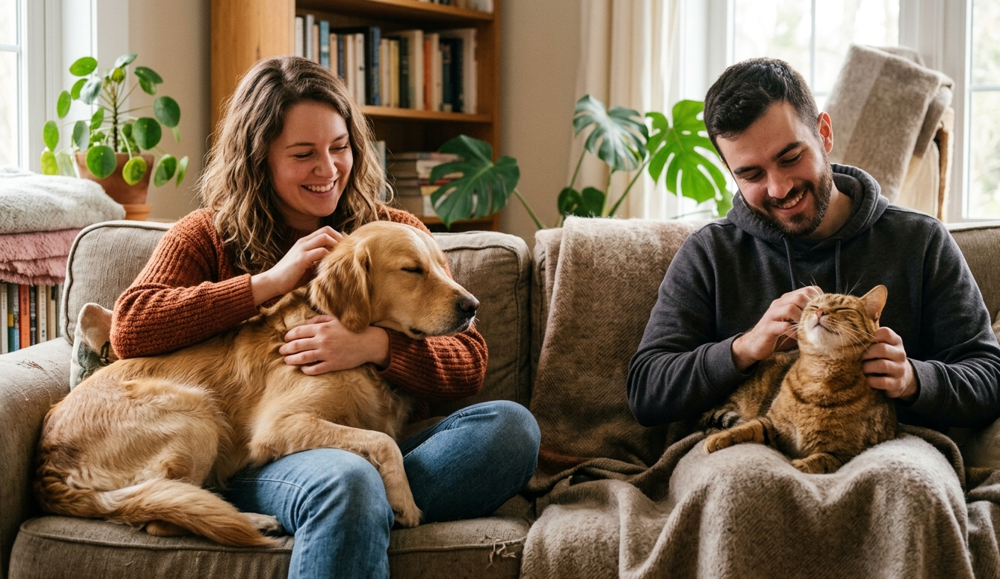

Nuestra Identidad
La historia detrás de Find a Pet
¿Por qué Find a Pet?
Garantizar una búsqueda ética de animales
Find a Pet nace de la necesidad de crear un espacio seguro donde el **bienestar animal** sea lo primero. Al observar cómo funciona internet hoy en día, detectamos que muchas personas que quieren un perro, un gato u otro animal, se encuentran con información confusa o anuncios que no garantizan el buen trato hacia ellos.
Por eso surge esta plataforma: para que encontrar a tu futuro compañero sea un proceso transparente. Aquí unimos la gestión de **adopciones de animales** con un listado de **criadores oficiales verificados**, asegurando que cada animal provenga de un entorno legal y respetuoso.
Lo que nos diferencia
Compromiso total con cada animal
Ofrecemos opciones responsables para quienes buscan integrar un nuevo compañero en su hogar.
Adopción Responsable
Damos visibilidad a animales que buscan una segunda oportunidad en un hogar definitivo.
Criadores Verificados
Solo mostramos criadores oficiales que cumplen con las normativas de salud y cuidado animal.
Seguridad y Ética
Validamos la información para evitar el fraude y proteger siempre la vida del animal.
Nuestra meta
Tecnología al servicio de los animales
Nuestra misión es que Find a Pet sea la herramienta de referencia para conectar animales con personas de forma consciente. Queremos que cualquier persona que busque un animal tenga la tranquilidad de que está en el lugar correcto, sin riesgos ni engaños.
Trabajamos cada día para que la tecnología facilite encuentros felices, priorizando siempre que cada animal reciba el respeto, la atención y el hogar que se merece.
